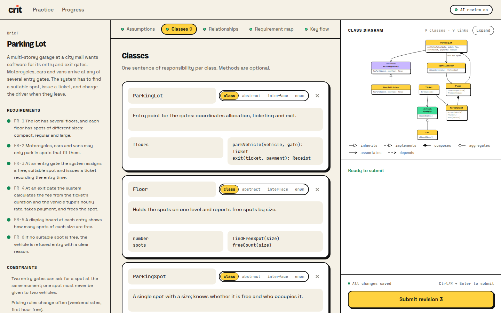
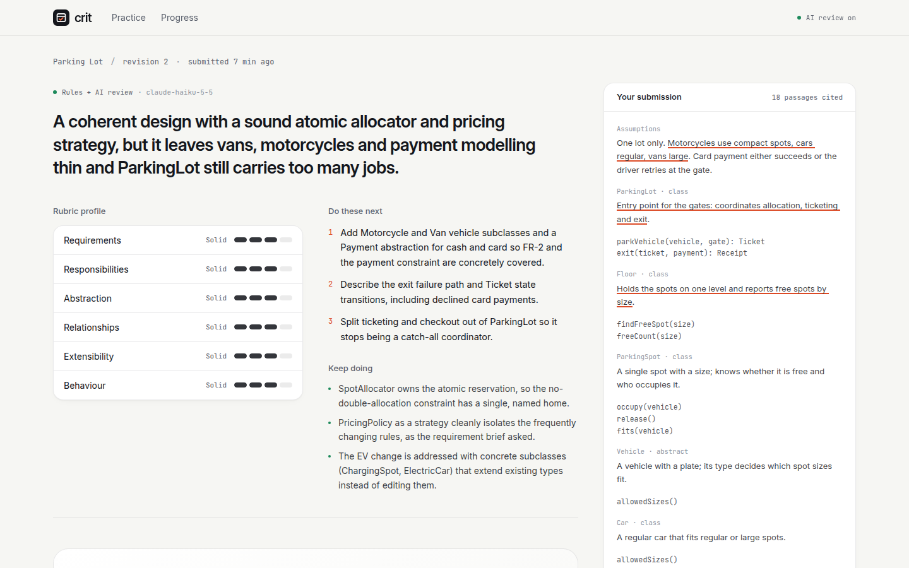

crit is a small practice platform for low-level design. Pick a problem, lay out your classes and the reasoning behind them, and get feedback graded against a fixed rubric that quotes your own design back to you. Revise, and the next review shows what you fixed.


Requires Node 22.13+. SQLite comes from Node's built-in node:sqlite, so nothing native needs compiling.
git clone https://github.com/Sumit99589/crit-lld && cd crit-lld npm install cp .env.example .env # optional: add ANTHROPIC_API_KEY for the AI review npm run build npm start # http://localhost:4000 npm run dev # development: API on :4000, Vite with hot reload on :5173 npm test # 62 server tests npm run typecheck
Without an API key everything still works: each submission gets complete rule-based feedback, clearly labelled as such. A Dockerfile and a Render blueprint (render.yaml) are included for deployment.
| Variable | Default | Meaning |
|---|---|---|
| ANTHROPIC_API_KEY | – | Turns on the AI review; without it the app runs rules-only |
| LLM_MODEL | claude-haiku-5-5 | Model used for the rubric review |
| LLM_TOTAL_CALLS | unlimited | Lifetime cap on paid reviews (30 on the public demo) |
| LLM_DAILY_CALLS · LLM_PER_LEARNER_HOURLY | 200 · 10 | Daily and per-learner caps; beyond them, rules-only |
| AI_REVIEW · DATABASE_PATH · PORT | – · ./data/crit.db · 4000 | AI_REVIEW=off forces rules-only; SQLite file; HTTP port |
server/ Node + TypeScript + Express · SQLite (node:sqlite) · Anthropic SDK · zod · Vitest domain/ Attempt, Submission, Evaluation (state machine), Rubric, Feedback, DesignModel formats/ DesignCanvasFormat: parse, readiness rules, → DesignModel, canonical rendering evaluation/ Evaluator interface · RuleBasedEvaluator + DesignChecks · LLM judge · FeedbackAssembler · revision diff application/ PracticeService · EvaluationWorker (lease, retries, recovery) · ProgressService · ports infra/ SQLite repositories (versioned writes) · InProcessQueue · logger web/ React 19 + Vite + Tailwind 4 + motion · dagre for diagram layout · react-resizable-panels docs/ Research note, design note (PDF + Markdown), screenshots
SubmissionFormat; new evaluators behind Evaluator.I built this with Claude Code as a pair programmer. Most of the code was typed by the AI. I made the product and scope calls, steered the design, reviewed what came back, ran it, and pushed back where it didn't fit. Claude also did the first pass of the web research; the research note only cites pages it fetched and linked. Inside the product, a model (Claude Haiku 5.5) grades designs.
AI suggestedPython + FastAPI with a plain HTML/JS frontend, because domain classes read cleanly, there's no build step, and it uses little memory.
I decidedTypeScript end to end, with React + Tailwind. A practice tool lives or dies on whether people enjoy using it, and one language means the API types and the domain read the same way.
AI laid outfree text (easy, but almost nothing can be checked), a code skeleton (strongest evidence, but needs sandboxing and per-language parsing), and a structured "design canvas".
I chosethe canvas: the smallest format with both structure (classes, typed relationships, a requirement map, which rules can check) and reasoning (flow, decisions, response to change, which a reviewer can judge). It also gave us the live UML diagram for free.
Defaulta large model, for "better" feedback.
I asked forthe cheapest model, plus rule-based feedback that works on its own, because a practice tool must be cheap enough to use repeatedly. The result is Claude Haiku 5.5 at low effort, a cache keyed on the exact input, and daily, per-learner and lifetime caps (30 reviews in total on the public demo). A real review measured about 4k input and 2k output tokens, roughly $0.0015.
AI proposedthree guards: make the model quote the learner's design for every grade, verify every quote in code, and let deterministic facts cap its grades.
I kept all three.The TUM paper found LLM graders are generous to weak work, and I wanted feedback that points at evidence, not a number. In the first real run all 18 quotes verified, and a cap fired on a deliberately weak revision 1. The schema also asks for evidence before the band, the judge never sees its earlier verdicts, and "what you fixed" is computed by code.
I rejectedthe first, dark editorial design after using it, and asked for a light theme, a more professional typeface (Inter), a new logo, resizable workspace panes, and much less text. I also replaced the "How feedback works" section because it looked AI-generated; it is now a single row of four steps.
Evaluation let a learner trigger "retry" on a running evaluation, because running → queued is a legal internal transition. The test suite caught it, and the fix guards learner retries explicitly.